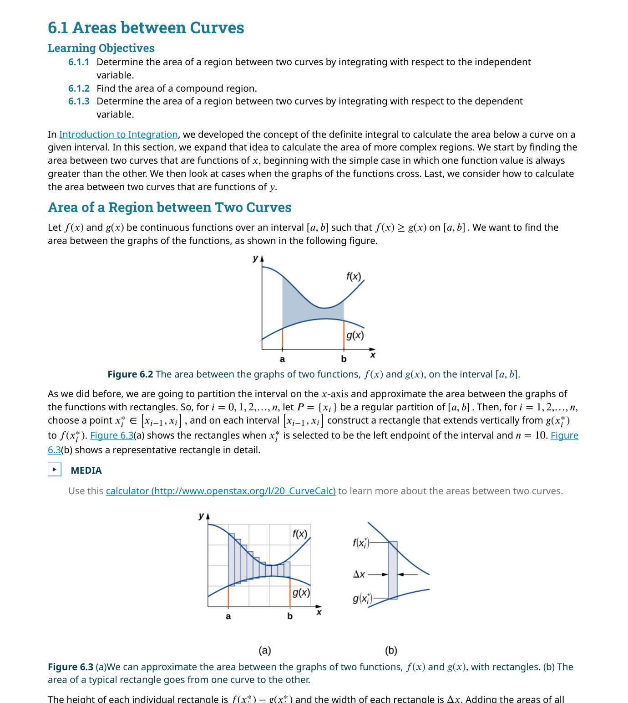
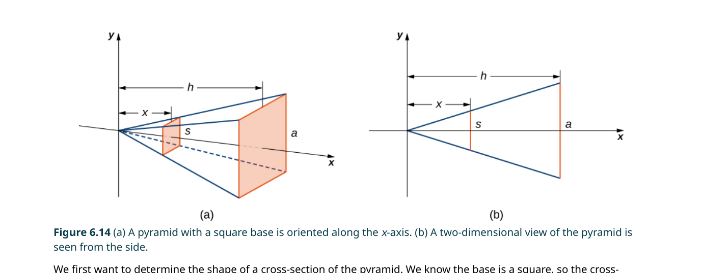
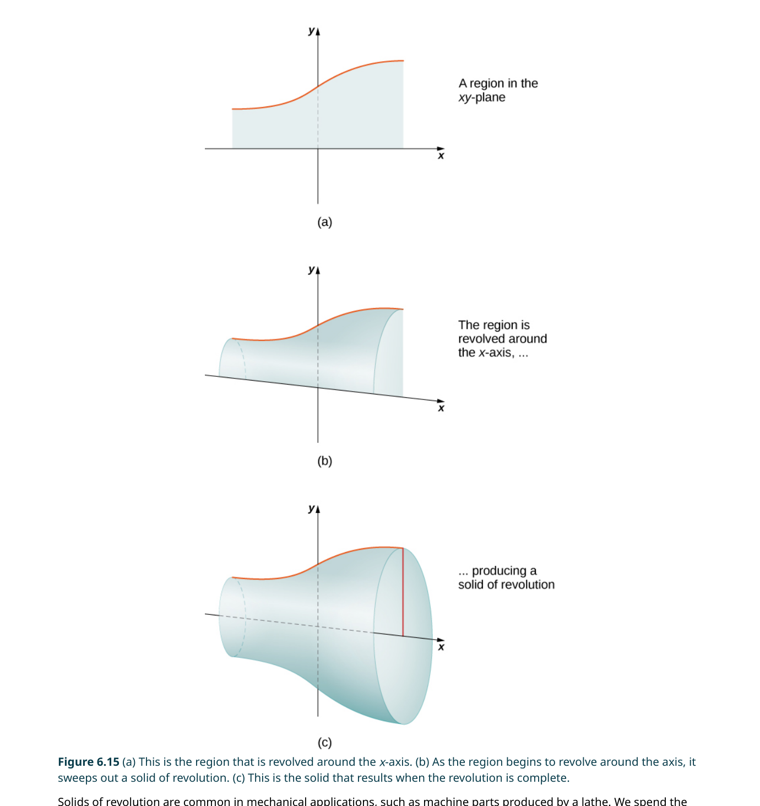
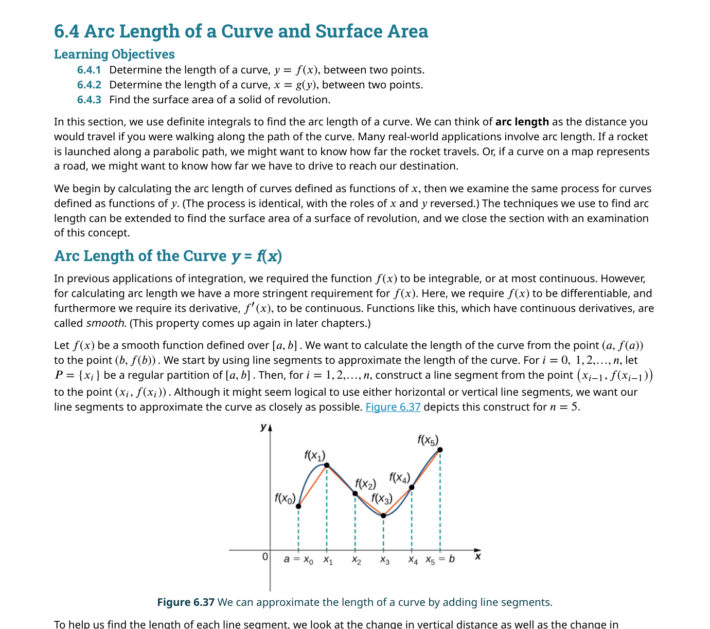
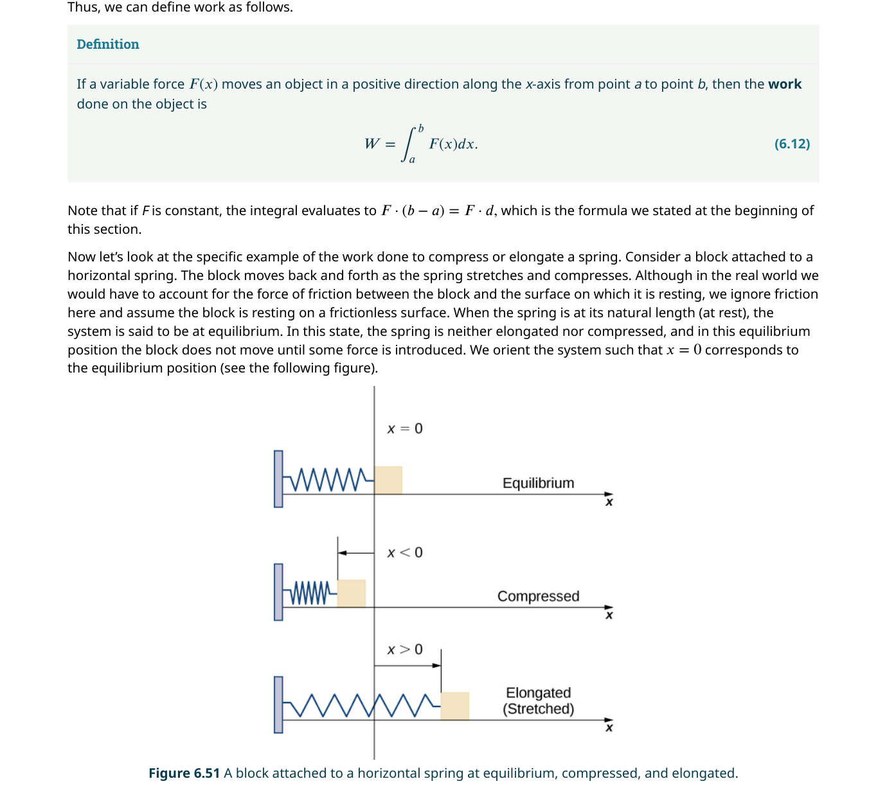
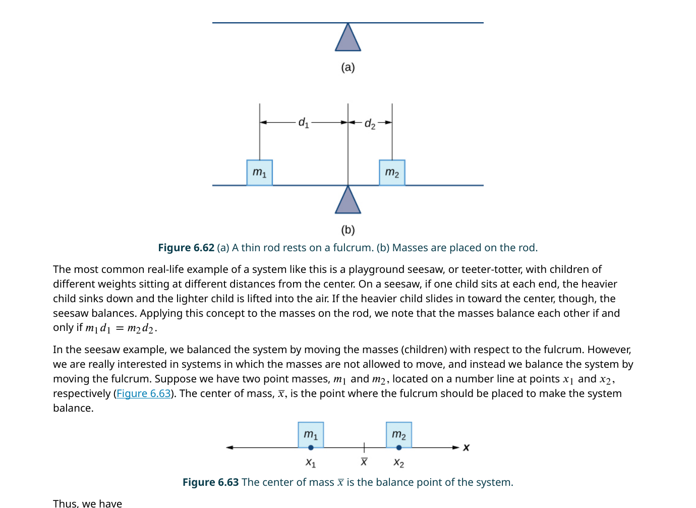
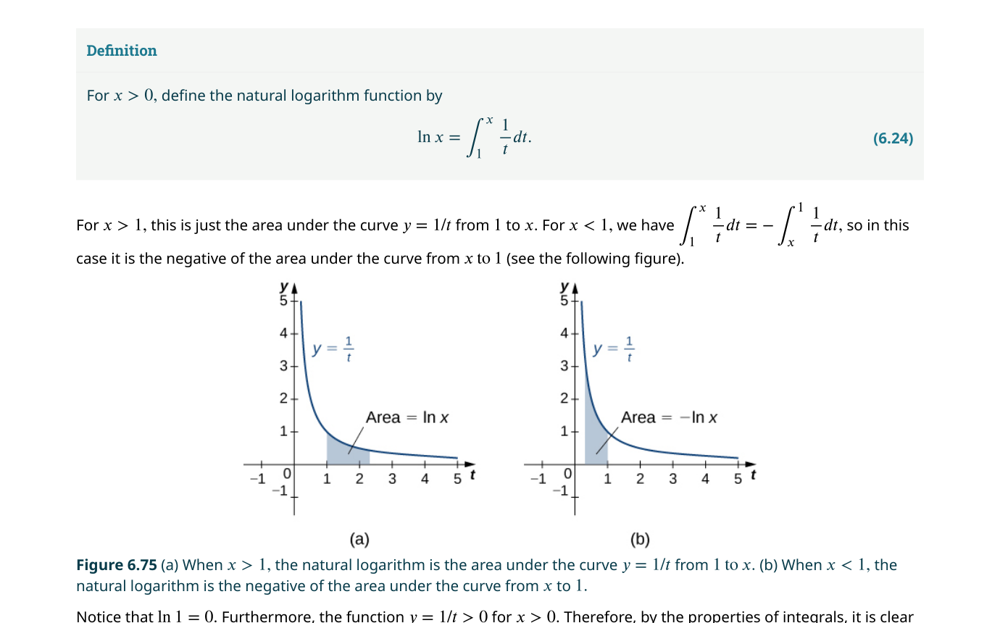
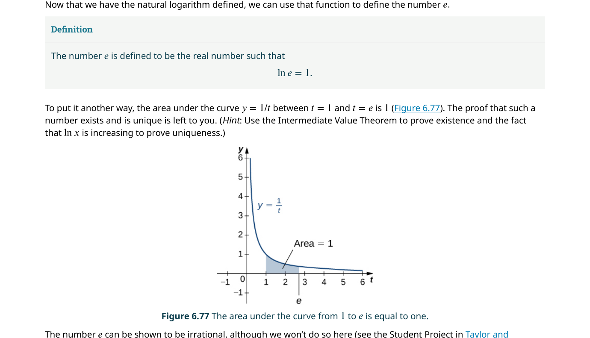
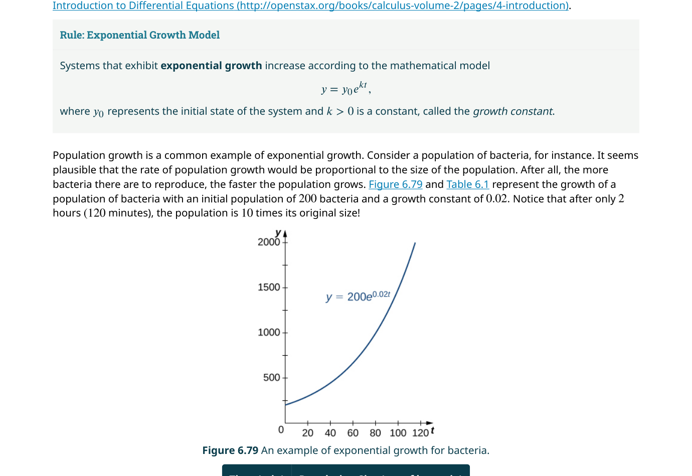
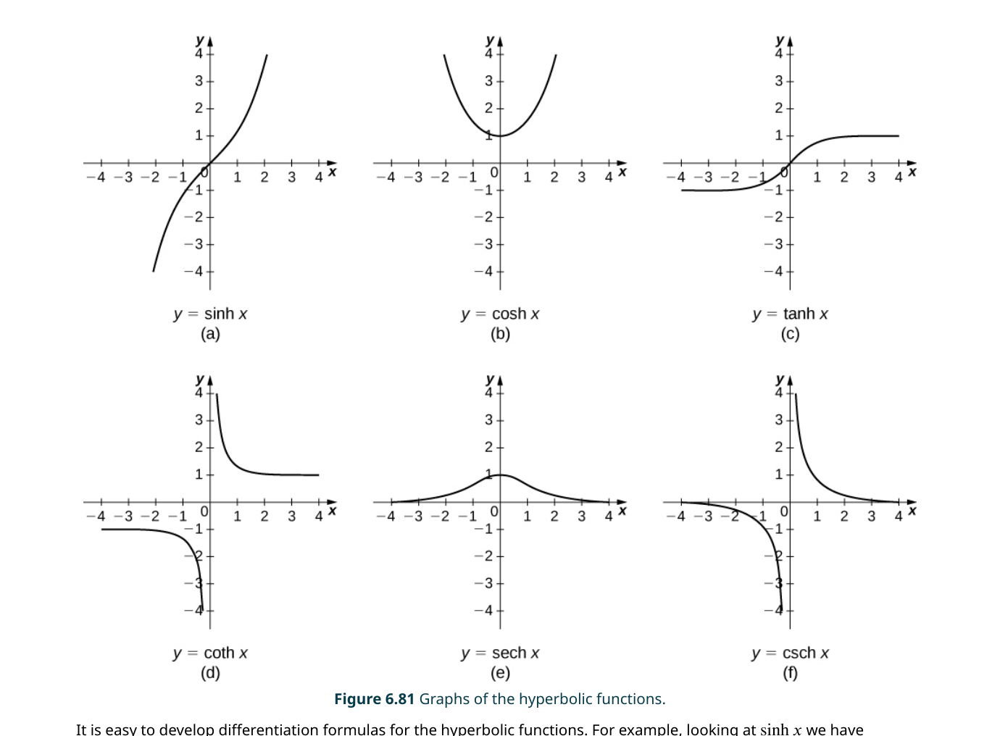

積分的應用
📌 本章要解決的核心問題
定積分不僅僅是計算「曲線下面積」的工具——它是累積量的通用語言。本章展示了定積分如何被用來計算幾何量（面積、體積、弧長、表面積）、物理量（質量、功、液壓）以及描述自然界中的增長與衰減現象。胡佛水壩承受的水壓力、彈簧壓縮所需的功、細菌族群的指數增長——這些看似不相關的問題，全部可以用同一個數學框架來解決：定積分。
🔑 關鍵概念（10 條）
- 曲線間面積：$A = \int_a^b [f(x)-g(x)]\,dx$，也可對 $y$ 積分：$A = \int_c^d [u(y)-v(y)]\,dy$
- 切片法：$V = \int_a^b A(x)\,dx$——任何立體的體積都可以通過已知截面積來計算
- 圓盤法（Disk Method）：$V = \int_a^b \pi [f(x)]^2\,dx$——當旋轉區域直接接觸旋轉軸時使用
- 墊圈法（Washer Method）：$V = \int_a^b \pi ([R(x)]^2 - [r(x)]^2)\,dx$——當旋轉體中間有空洞時使用
- 圓柱殼法（Cylindrical Shells）：$V = \int_a^b 2\pi x f(x)\,dx$——積分方向垂直於旋轉軸
- 弧長：$L = \int_a^b \sqrt{1+[f'(x)]^2}\,dx$——曲線的「里程」
- 功：$W = \int_a^b F(x)\,dx$——變力所做的功，彈簧 $F=kx$，抽水問題
- 質心與形心：$\bar{x} = \frac{M_y}{m}$，Pappus 定理 $V = A \cdot 2\pi\bar{x}$
- 自然對數的積分定義：$\ln x = \int_1^x \frac{1}{t}\,dt$，$e$ 定義為使 $\ln e = 1$ 的數
- 指數增長/衰減：$y = y_0 e^{kt}$，倍增時間 $t_d = \frac{\ln 2}{k}$，半衰期 $t_{1/2} = \frac{\ln 2}{k}$
🧭 本章推理地圖
定積分 = 黎曼和的極限（回顧 §5.1–§5.2） → 推廣到 面積與體積（§6.1–§6.3）：切片→圓盤→殼法，任何截面形狀 → 延伸到 弧長與表面積（§6.4）：曲線與曲面的度量 → 應用到 物理量（§6.5–§6.6）：質量、功、液壓、質心 → 積分定義對數與指數（§6.7）提供嚴格的超越函數基礎 → 導出 指數增長模型（§6.8）：人口、放射性衰變、冷卻定律
6.1 曲線間的面積（Areas between Curves）
在第 5 章中，我們學會了用定積分計算一條曲線下方
這個公式的推導與第 5 章幾乎一模一樣：把區間 $[a,b]$ 切成 $n$ 個等寬度 $\Delta x$ 的小段，在每一段上取一個點 $x_i^*$，構建一個高度為 $f(x_i^*) - g(x_i^*)$、寬度為 $\Delta x$ 的矩形。所有矩形的面積和是一個黎曼和，取 $n \to \infty$ 的極限就得到定積分。

在大多數實際問題中，積分區間 $[a,b]$ 不是直接給出的——你需要通過解 $f(x)=g(x)$ 來找到兩條曲線的交點，這些交點自然成為積分的上下限。
📝 範例
📝 範例 6.1：基本曲線間面積求由 $f(x)=x+1$（上）和 $g(x)=x^2-2x-1$（下）在 $x=-1$ 到 $x=2$ 之間所圍區域的面積。
解：在區間 $[-1,2]$ 內，$f(x) \geq g(x)$（可通過代入測試點驗證）。因此： $$A = \int_{-1}^{2} [(x+1) - (x^2-2x-1)]\,dx = \int_{-1}^{2} (-x^2+3x+2)\,dx$$ $$= \left[-\frac{x^3}{3} + \frac{3x^2}{2} + 2x\right]_{-1}^{2} = \left(-\frac{8}{3}+6+4\right) - \left(\frac{1}{3}+\frac{3}{2}-2\right)$$ $$= \frac{22}{3} - \left(-\frac{1}{6}\right) = \frac{45}{6} = 7.5\ \text{平方單位}$$
公式 $A = \int [f(x)-g(x)]\,dx$ 只在 $f(x) \geq g(x)$ 時給出正確結果。如果兩條曲線在積分區間內交叉，直接套用會得到部分負值，導致面積被抵消。解決方案：先把區間按交點分段，在每一段內確定哪條曲線在上面，再分段積分。
複合區域（Compound Regions）
當兩條曲線在積分區間內交叉時，我們必須使用絕對值版本的定理：
📝 範例
📝 範例 6.3：交叉曲線求 $f(x)=\sin x$ 和 $g(x)=\cos x$ 在 $[0,\pi]$ 之間所圍區域的面積。
解：先求交點：$\sin x = \cos x \Rightarrow \tan x = 1 \Rightarrow x = \frac{\pi}{4}$。
在 $[0,\pi/4]$：$\cos x \geq \sin x$（$\cos$ 在上面）
在 $[\pi/4,\pi]$：$\sin x \geq \cos x$（$\sin$ 在上面）
$$A = \int_0^{\pi/4}(\cos x - \sin x)\,dx + \int_{\pi/4}^{\pi}(\sin x - \cos x)\,dx$$ $$= [\sin x + \cos x]_0^{\pi/4} + [-\cos x - \sin x]_{\pi/4}^{\pi}$$ $$= (\frac{\sqrt{2}}{2}+\frac{\sqrt{2}}{2} - 0 - 1) + (1-0 - (-\frac{\sqrt{2}}{2}-\frac{\sqrt{2}}{2})) = 2\sqrt{2}\ \text{平方單位}$$
很多學生直接在整個區間上套 $\int (f-g)\,dx$，而不先確認 $f$ 是否真的在 $g$ 上面。當兩條曲線交叉時，這會導致積分結果小於實際面積。養成習慣：先畫草圖、找交點、分段積分。
對 $y$ 積分
有時候，把曲線表示為 $x$ 的函數（即 $y=f(x)$ 的形式）並對 $x$ 積分會導致需要分段積分。但如果我們將曲線表示為 $y$ 的函數（$x = u(y)$）並對 $y$ 積分，可能只需要一個積分就能解決問題。
選擇對 $x$ 還是對 $y$ 積分的經驗法則：如果區域的左右邊界可以用 $y$ 的單一函數描述，而上下邊界需要分段，則對 $y$ 積分更簡單；反之亦然。實際上，兩種方法應該得到相同的答案，選擇積分更容易計算的那一個。

當你看到像 $x = y^2$ 和 $x = y+2$ 這樣的曲線時，對 $y$ 積分通常更簡單（因為解 $y = \pm\sqrt{x}$ 會產生兩個分支需要分段）。反之，對於 $y = \sin x$ 和 $y = \cos x$ 這類函數，對 $x$ 積分更自然。訣竅：畫出區域，看水平切片還是垂直切片更簡單。
📝 範例
📝 範例 6.4/6.5：選擇積分變數求由 $y = \sqrt{x}$ 和 $y = x-6$ 以及 $x$ 軸所圍區域的面積。
對 $x$ 積分：需要分段（下方邊界從 $y=0$ 變為 $y=x-6$）。
對 $y$ 積分（更簡單）：右邊界 $x = y+6$，左邊界 $x = y^2$（因 $x = y^2$ 來自 $y=\sqrt{x}$）。交點：$y+6 = y^2 \Rightarrow y^2-y-6=0 \Rightarrow (y-3)(y+2)=0$，取 $y=3$。下界 $y=0$（$x$ 軸）。
$$A = \int_0^3 [(y+6) - y^2]\,dy = \left[\frac{y^2}{2}+6y-\frac{y^3}{3}\right]_0^3 = \frac{9}{2}+18-9 = 13.5\ \text{平方單位}$$
6.2 切片法求體積（Determining Volumes by Slicing）
我們從小就學過一些基本幾何體的體積公式
切片法（The Slicing Method）
核心思想極其簡單：如果我們知道一個立體在每個位置 $x$ 處的截面積 $A(x)$，那麼體積就是把所有這些「無限薄」的截面積加總起來：
「圓柱體」在數學中的定義比日常理解更廣：任何可以通過將一個平面區域沿著垂直於該區域的直線平移而生成的立體都稱為圓柱體。因此，所有垂直於軸的截面都完全相同。對於這樣的立體，$V = A \cdot h$（截面積 × 高度）。但對於截面積隨位置變化的立體，我們就必須使用積分。

📝 範例
📝 範例 6.6：用切片法推導金字塔體積公式推導底面邊長 $s$、高度 $h$ 的正四角錐體積公式。
解：將金字塔尖端放在原點、底面在 $x=h$ 處。在位置 $x$ 處，截面是一個正方形。由相似三角形：$\frac{\text{截面邊長}}{s} = \frac{x}{h}$，所以截面邊長 $= \frac{sx}{h}$。
截面積：$A(x) = \left(\frac{sx}{h}\right)^2 = \frac{s^2}{h^2}x^2$
體積：$V = \int_0^h \frac{s^2}{h^2}x^2\,dx = \frac{s^2}{h^2}\left[\frac{x^3}{3}\right]_0^h = \frac{s^2}{h^2} \cdot \frac{h^3}{3} = \frac{1}{3}s^2 h$
這正是我們熟知的公式 $V = \frac{1}{3} \times \text{底面積} \times \text{高度}$！
切片法不僅能推導你已經知道的公式，還能計算任何截面積已知的立體體積——包括那些沒有現成公式的奇形怪狀的物體。底是圓形但截面是正方形的立體？底是三角形但截面是半圓形的立體？全部可以通過切片法來計算。只要你能寫出 $A(x)$，你就能算出體積。
旋轉體與圓盤法（Disk Method）
當一個平面區域繞著一條直線旋轉時，產生的立體叫做旋轉體（solid of revolution）。旋轉體在工程中無處不在——車床加工的零件、陶輪塑造的花瓶、甚至足球的形狀都可以用旋轉體來近似。

對於旋轉體，切片法的截面恰好是圓形。當區域直接接觸旋轉軸時，截面是實心圓盤，這就是圓盤法：
📝 範例
📝 範例 6.8：圓盤法基本練習求由 $f(x) = \sqrt{x}$ 在 $[0,4]$ 上繞 $x$ 軸旋轉所產生旋轉體的體積。
解：$V = \int_0^4 \pi (\sqrt{x})^2\,dx = \int_0^4 \pi x\,dx = \pi\left[\frac{x^2}{2}\right]_0^4 = 8\pi\ \text{立方單位}$
這個結果可以驗證：它實際上是一個半徑 2、高度 4 的圓錐體積的兩倍——因為 $y=\sqrt{x}$ 的旋轉體類似一個「碗」的形狀。
圓盤法的公式是 $\pi[f(x)]^2$，不是 $\pi f(x^2)$。很多初學者看到 $\pi \int (\sqrt{x})^2 dx$ 時會混淆——請注意 $(\sqrt{x})^2 = x$，所以 $\pi \int x\,dx$。另外，如果旋轉軸不是 $x$ 軸或 $y$ 軸，半徑的表達式會不同（見下文墊圈法）。
墊圈法（Washer Method）
當旋轉區域不接觸旋轉軸時，旋轉體中間會有一個空洞。此時截面不是實心圓盤，而是墊圈——帶孔的圓盤，就像螺絲用的金屬墊片。
📝 範例
📝 範例 6.10：墊圈法求由 $f(x)=x$ 和 $g(x)=x^2$ 在 $[0,1]$ 之間所圍區域繞 $x$ 軸旋轉的體積。
解：在 $[0,1]$ 內 $x \geq x^2$，所以 $R(x)=x$（外半徑），$r(x)=x^2$（內半徑）。 $$V = \int_0^1 \pi(x^2 - x^4)\,dx = \pi\left[\frac{x^3}{3} - \frac{x^5}{5}\right]_0^1 = \pi\left(\frac{1}{3} - \frac{1}{5}\right) = \frac{2\pi}{15}\ \text{立方單位}$$
當旋轉軸是像 $y=-1$ 或 $x=3$ 這樣的直線時，半徑的計算必須格外小心。例如，繞 $y=-1$ 旋轉時，外半徑 $R(x) = f(x) - (-1) = f(x)+1$。關鍵原則：半徑 = 從旋轉軸到曲線的（垂直）距離。畫圖並標註距離是避免錯誤的最好方法。
6.3 旋轉體體積：圓柱殼法（Cylindrical Shells）
圓盤法和墊圈法都是在平行於旋轉軸的方向上切片

為什麼殼的體積是 $2\pi x f(x)\,dx$？想像你取一個圓柱殼，沿一條垂直線剪開，然後把它攤平——你會得到一個近似長方體的平板。這個平板的「長度」是圓周長 $2\pi x$（殼中間的半徑）、「高度」是 $f(x)$、「厚度」是 $dx$。因此體積 ≈ $2\pi x \cdot f(x) \cdot dx$。
📝 範例
📝 範例 6.12：殼法基本練習求由 $f(x) = 2x - x^2$ 在 $[0,2]$ 上所圍區域繞 $y$ 軸旋轉的體積。
解：$V = \int_0^2 2\pi x(2x - x^2)\,dx = 2\pi \int_0^2 (2x^2 - x^3)\,dx$ $$= 2\pi\left[\frac{2x^3}{3} - \frac{x^4}{4}\right]_0^2 = 2\pi\left(\frac{16}{3} - \frac{16}{4}\right) = 2\pi\left(\frac{16}{3} - 4\right) = \frac{8\pi}{3}\ \text{立方單位}$$
殼法和圓盤/墊圈法可以計算同一個旋轉體——答案必定相同。選擇的關鍵在於積分的難易度。一般原則：如果區域由 $y=f(x)$ 給出且繞 $y$ 軸旋轉，用殼法（積分變數 $x$）通常更簡單；如果繞 $x$ 軸旋轉，用圓盤法（積分變數 $x$）通常更簡單。當你發現一種方法需要分段積分而另一種不需要時，選後者。
🟦 圓盤 / 墊圈法
切片方向 ∥ 旋轉軸
截面 = 圓形 / 環形
積分：$\int \pi R^2\,dx$ 或類似
何時選擇：旋轉軸是 $x$ 軸且 $y=f(x)$；或旋轉軸是 $y$ 軸且 $x=g(y)$
🟩 圓柱殼法
切片方向 ⟂ 旋轉軸
殼 = 空心圓柱
積分：$\int 2\pi (\text{半徑})(\text{高度})\,d(\text{厚度})$
何時選擇：旋轉軸是 $y$ 軸且 $y=f(x)$；或旋轉軸是 $x$ 軸且 $x=g(y)$
📝 範例
📝 範例 6.15：繞非坐標軸的殼法求由 $f(x) = x^2$ 在 $[0,2]$ 上所圍區域繞直線 $x = 3$ 旋轉的體積。
解：殼的半徑 $= 3 - x$（因為殼在 $x$ 處，而旋轉軸在 $x=3$，距離是 $3-x$）。
$V = \int_0^2 2\pi(3-x)(x^2)\,dx = 2\pi\int_0^2 (3x^2 - x^3)\,dx$ $$= 2\pi\left[x^3 - \frac{x^4}{4}\right]_0^2 = 2\pi\left(8 - \frac{16}{4}\right) = 8\pi\ \text{立方單位}$$
當旋轉軸不是 $y$ 軸時，殼的半徑 不是 $x$！你必須計算從殼的位置到旋轉軸的距離。繞 $x = h$ 旋轉時半徑 $= |x - h|$；繞 $y = k$ 旋轉時半徑 $= |y - k|$。方向性很重要——畫圖並在圖上標註距離。
6.4 弧長與表面積（Arc Length and Surface Area）
你知道如何計算曲線下方的面積，但你知道如何計算曲線本身的長度嗎？

弧長公式的推導非常直覺：把區間切成 $n$ 段，在第 $i$ 段上連接 $(x_{i-1}, f(x_{i-1}))$ 和 $(x_i, f(x_i))$ 的線段。根據畢氏定理，這段線段的長度 = $\sqrt{(\Delta x)^2 + (\Delta y_i)^2}$。根據均值定理，$\Delta y_i = f'(x_i^*)\Delta x$，所以線段長 = $\sqrt{1+[f'(x_i^*)]^2}\,\Delta x$。取極限就得到弧長積分。
📝 範例
📝 範例 6.18：計算弧長求 $f(x) = \frac{2}{3}x^{3/2}$ 在 $[0,1]$ 上的弧長。
解：$f'(x) = x^{1/2}$，所以 $1 + [f'(x)]^2 = 1 + x$。
$$L = \int_0^1 \sqrt{1+x}\,dx$$ 令 $u = 1+x$，$du = dx$，當 $x=0$ 時 $u=1$，$x=1$ 時 $u=2$： $$L = \int_1^2 u^{1/2}\,du = \left[\frac{2}{3}u^{3/2}\right]_1^2 = \frac{2}{3}(2\sqrt{2} - 1) \approx 1.219$$
弧長公式看似簡單，但 $\sqrt{1+[f'(x)]^2}$ 往往極難積分！即使是像 $f(x)=x^2$ 這樣的基本函數，其弧長積分 $\int \sqrt{1+4x^2}\,dx$ 也需要三角替換法才能求解。很多弧長積分沒有初等反導數，必須使用數值方法。這是弧長問題的一大特點——設置積分容易，計算積分難。
旋轉體表面積
將弧長的概念擴展到三維：當一條曲線繞軸旋轉時，它會產生一個曲面。這個曲面的表面積可以用類似弧長的方式來計算。
表面積公式的推導涉及截錐（frustum）的側面積。每個無窮小的曲線段旋轉後產生一個截錐帶（而不是圓柱帶），其側面積 = $2\pi \times (\text{平均半徑}) \times (\text{斜邊長})$。平均半徑 ≈ $f(x_i^*)$，斜邊長 = $\sqrt{1+[f'(x_i^*)]^2}\,\Delta x$。
📝 範例
📝 範例 6.21：計算旋轉體表面積求 $f(x) = \sqrt{x}$ 在 $[0,4]$ 上繞 $x$ 軸旋轉的表面積。
解：$f'(x) = \frac{1}{2\sqrt{x}}$，$1+[f'(x)]^2 = 1 + \frac{1}{4x}$。
$$\text{SA} = \int_0^4 2\pi\sqrt{x}\sqrt{1+\frac{1}{4x}}\,dx = 2\pi\int_0^4 \sqrt{x+\frac{1}{4}}\,dx$$ $$= 2\pi\left[\frac{2}{3}(x+\frac{1}{4})^{3/2}\right]_0^4 = \frac{4\pi}{3}\left((4.25)^{3/2} - (0.25)^{3/2}\right) \approx 36.18\ \text{平方單位}$$
注意弧長和表面積公式之間的結構相似性：弧長 = $\int 1 \cdot ds$，表面積 = $\int 2\pi f(x) \cdot ds$，其中 $ds = \sqrt{1+[f'(x)]^2}\,dx$ 是弧長微元。這反映了更一般的模式——表面積 =（周長）×（弧長），這是帕普斯定理在三維中的體現。
弧長公式的推導直覺：將曲線切成 tiny 線段，每個線段用畢氏定理近似：$\Delta s \approx \sqrt{(\Delta x)^2 + (\Delta y)^2}$。除以 $\Delta x$ 後取極限：$ds = \sqrt{1 + (dy/dx)^2}\,dx$。弧長就是所有這些 tiny 線段的積分。這個推導完美展示了微積分的核心思想：近似 → 極限 → 積分。
6.5 物理應用（Physical Applications）
積分不僅僅是幾何工具——它更是物理學的語言。
質量與密度
如果一根細桿的密度是均勻的，質量 = 密度 × 長度。但如果密度隨位置變化呢？例如一根合金棒，兩端的成分不同導致密度不同。積分提供了答案：
📝 範例
📝 範例 6.23：從線性密度求質量一根長 10 公尺的細桿，其密度函數為 $\rho(x) = 2 + 0.1x$ kg/m（$x$ 從左端量起）。求總質量。
解：$m = \int_0^{10} (2 + 0.1x)\,dx = \left[2x + 0.05x^2\right]_0^{10} = 20 + 5 = 25\ \text{kg}$
這很直觀——平均密度是 $2.5$ kg/m（中點處的密度），乘以長度 10 得 25 kg。
功（Work）
在物理中，功 = 力 × 位移（當力和位移同向時）。但當力隨位置變化時（例如拉伸彈簧越遠越費力），我們需要積分：
虎克定律與彈簧
對於理想彈簧，壓縮或拉伸所需的力與形變量成正比——這就是虎克定律（Hooke's Law）：$F(x) = kx$，其中 $k$ 是彈簧常數（spring constant），$x$ 是從平衡位置算起的形變量。

📝 範例
📝 範例 6.25：彈簧做功一根彈簧的自然長度為 20 cm。需要 30 N 的力將其拉伸至 25 cm。求將其從 25 cm 拉伸至 30 cm 所需的功。
解：先求 $k$：形變量 $x = 0.05$ m 時 $F = 30$ N → $k = \frac{30}{0.05} = 600$ N/m。
設 $x$ 為從平衡位置（20 cm）算起的形變量，平衡位置對應 $x=0$。
從 25 cm（$x=0.05$）到 30 cm（$x=0.10$）： $$W = \int_{0.05}^{0.10} 600x\,dx = 600\left[\frac{x^2}{2}\right]_{0.05}^{0.10} = 300(0.01 - 0.0025) = 2.25\ \text{J}$$
抽水問題（Pumping Problems）
抽水問題是積分應用的經典範例。核心挑戰：水箱底部的水需要比頂部的水被提升更遠的距離，因此不同深度的水所需功不同。
(1) 建立座標系：通常讓 $x$ 軸垂直向下，原點在水的上表面或水箱頂部。
(2) 確定一個「代表層」：厚度 $\Delta x$ 的薄水層，其體積 ≈ 截面積 × $\Delta x$。
(3) 計算提升該層所需的功：功 = (重量) × (提升距離) = (密度 × 體積) × 距離。
(4) 積分全部層次。
📝 範例
📝 範例 6.26：倒圓錐水箱抽水一個倒圓錐水箱，高度 12 ft，頂部半徑 6 ft。水箱裝滿水。將所有水從頂部邊緣抽出需要多少功？（水的密度 = 62.5 lb/ft³）
解：設 $x$ 軸垂直向下，原點在頂部。在深度 $x$ 處，由相似三角形：$\frac{r}{6} = \frac{x}{12}$，所以 $r = \frac{x}{2}$。
厚度 $dx$ 的水層體積 = $\pi r^2\,dx = \pi(\frac{x}{2})^2\,dx = \frac{\pi}{4}x^2\,dx$。
該層的重量 = $62.5 \cdot \frac{\pi}{4}x^2\,dx$。
提升距離 = $x$（從深度 $x$ 提升到頂部 $x=0$ 的距離）。
$$W = \int_0^{12} 62.5 \cdot \frac{\pi}{4}x^2 \cdot x\,dx = \frac{62.5\pi}{4}\int_0^{12} x^3\,dx = \frac{62.5\pi}{4} \cdot \frac{12^4}{4} \approx 254,469\ \text{ft-lb}$$
抽水問題中最常見的錯誤是坐標原點和方向的選擇不一致。如果你設 $x$ 向下為正、原點在頂部，則深度 $x$ 處的水層需被提升距離 $x$。如果你設 $x$ 向上為正、原點在底部，則提升距離為 $H - x$。兩種方法都對——但必須從頭到尾保持一致的坐標系。
液壓（Hydrostatic Force）
水壩、水箱壁、潛水艇——這些結構都承受著來自液體的壓力。根據帕斯卡原理，深度 $d$ 處的壓力 $p = \rho g d$（$\rho$ = 液體密度，$g$ = 重力加速度）。對於垂直放置的平板，由於深度隨位置變化，總力必須用積分計算：
胡佛水壩高約 726 ft，水庫滿時水深約 530 ft。使用液壓積分可以計算出水壩表面承受的總力——這是一個天文數字，約 8 × 10⁹ 磅（400 萬噸）！而當乾旱使水位下降 125 ft 時，總力會大幅減少——這正是積分能夠精確量化的。
6.6 力矩與質心（Moments and Centers of Mass）
想像一個蹺蹺板

薄板的形心（Centroid of a Lamina）
對於連續分佈的質量（薄板、金屬片），我們用積分取代求和。當密度均勻時，質心只取決於形狀，此時稱為形心（centroid）。
📝 範例
📝 範例 6.31：求形心求由 $f(x) = 4 - x^2$ 和 $x$ 軸在 $[-2,2]$ 上所圍區域的形心。
解：由對稱性，$\bar{x} = 0$（區域對稱於 $y$ 軸）。
總質量：$m = \int_{-2}^2 (4-x^2)\,dx = 2\int_0^2 (4-x^2)\,dx = 2\left[4x - \frac{x^3}{3}\right]_0^2 = 2(8 - \frac{8}{3}) = \frac{32}{3}$
力矩 $M_x$：$\int_{-2}^2 \frac{1}{2}(4-x^2)^2\,dx = \int_0^2 (16 - 8x^2 + x^4)\,dx = \left[16x - \frac{8x^3}{3} + \frac{x^5}{5}\right]_0^2 = 32 - \frac{64}{3} + \frac{32}{5} = \frac{256}{15}$
$$\bar{y} = \frac{256/15}{32/3} = \frac{256}{15} \cdot \frac{3}{32} = \frac{8}{5} = 1.6$$ 形心為 $(0, 1.6)$。
如果一個區域關於某條直線對稱，則其形心必定落在該直線上。這可以大幅簡化計算——你只需要求另一個坐標。例如，關於 $y$ 軸對稱的區域自動有 $\bar{x} = 0$。
帕普斯定理（Theorem of Pappus）
這是本章最優雅的定理之一：如果你知道一個平面區域的面積和形心位置，你可以不用任何積分就計算出它繞一條不與之相交的軸旋轉所產生的體積。
📝 範例
📝 範例 6.34：用帕普斯定理求環面體積求一個半徑為 2 的圓（圓心在 $(4,0)$）繞 $y$ 軸旋轉所產生環面（torus）的體積。
解：圓面積 $A = \pi(2)^2 = 4\pi$。形心在圓心 $(4,0)$，所以 $\bar{x} = 4$。
$$V = A \cdot 2\pi\bar{x} = 4\pi \cdot 2\pi(4) = 32\pi^2\ \text{立方單位}$$ 無需任何積分！如果使用殼法或墊圈法，計算會複雜得多。
帕普斯定理只適用於旋轉軸不穿過區域的情況。如果旋轉軸穿過區域，旋轉體的形狀會自我重疊，定理不成立。另外，形心必須是區域的幾何形心（均勻密度），而非質心（如果密度不均勻）。
質心的物理直覺：如果你用一根手指頂住一個物體的質心，物體會平衡。數學上，質心是位置的「加權平均」——權重是質量分佈。一維的質心公式 $\bar{x} = \frac{\int x\,dm}{\int dm}$ 正是統計學中「期望值」的連續版本。
Pappus 定理：一個平面區域繞不與其相交的軸旋轉，產生的體積 = 區域面積 × 質心旋轉的周長（$V = 2\pi \bar{r} A$）。這將體積計算簡化為質心計算——在處理對稱性高的問題時特別有用。
6.7 積分、指數函數與對數（Integrals, Exponential Functions, and Logarithms）
在前面幾章，我們一直「理所當然地」使用 $\ln x$ 和 $e^x$

從這個定義出發，微積分基本定理立即給出 $\frac{d}{dx}\ln x = \frac{1}{x}$（對 $x>0$），擴展到 $\ln|x|$ 則 $\frac{d}{dx}\ln|x| = \frac{1}{x}$（對所有 $x \neq 0$）。對數的所有代數性質（$\ln(xy) = \ln x + \ln y$ 等）都可以從這個積分定義嚴格證明。
數字 $e$ 的定義
有了自然對數，$e$ 終於可以被嚴格定義：

指數函數 $\exp(x)$ 被定義為 $\ln x$ 的反函數。可以證明對於有理數 $r$，$\exp(r) = e^r$，所以我們寫 $\exp(x) = e^x$。對於無理數指數，$e^x$ 就直接由這個反函數關係來定義。從反函數微分法則立即得到 $\frac{d}{dx}e^x = e^x$。
📝 範例
📝 範例 6.35–6.36：微分與積分(a) 求 $\frac{d}{dx}\ln(x^3 + 2x)$。
(b) 求 $\int \frac{2x}{x^2+1}\,dx$。
解：
(a) 使用連鎖律：$\frac{d}{dx}\ln(x^3+2x) = \frac{1}{x^3+2x} \cdot (3x^2+2) = \frac{3x^2+2}{x^3+2x}$
(b) 令 $u = x^2+1$，$du = 2x\,dx$：$\int \frac{2x}{x^2+1}\,dx = \int \frac{1}{u}\,du = \ln|u| + C = \ln(x^2+1) + C$（因為 $x^2+1>0$ 對所有 $x$）
本節的邏輯鏈是微積分中最優雅的建構之一：先用積分定義 $\ln x$ → 從 FTC 得到導數 → 證明對數性質 → 定義 $e$（通過 $\ln e = 1$）→ 定義 $e^x$ 為反函數 → 證明指數律 → 得到 $e^x$ 的導數。這完全避免了你之前在高中學到的「$\ln x$ 是以 $e$ 為底的對數」這種循環定義。
$\ln x$ 最初只定義在 $x > 0$。$\int \frac{1}{x}\,dx = \ln|x| + C$（帶絕對值）是對定義域的擴展。但 $\int_1^{-1} \frac{1}{t}\,dt$ 沒有意義——你不能把積分上下限設在定義域之外。
用積分定義 $\ln x$：$\ln x = \int_1^x \frac{1}{t}\,dt$ 是對數函數最嚴格的定義方式。從這個定義出發，可以推導出對數的所有性質：$\ln(ab) = \ln a + \ln b$（透過積分變數變換），$\frac{d}{dx}\ln x = \frac{1}{x}$（由微積分基本定理直接得出）。這比高中依賴「指數的反函數」的定義更嚴謹。
6.8 指數增長與衰減（Exponential Growth and Decay）
自然界中最普遍的變化模式之一就是

倍增時間（doubling time）是一個特別有用的概念：無論從哪個起點開始，數量翻倍所需的時間都是常數。令 $y = 2y_0$ 求解：$2y_0 = y_0 e^{kt_d} \Rightarrow t_d = \frac{\ln 2}{k}$。
📝 範例
📝 範例 6.42–6.43：複利與退休規劃(a) 一個細菌培養皿初始有 100 個細菌，增長常數 $k = 0.02$/分鐘。3 小時後有多少細菌？何時達到 100,000 個？
(b) 一位 25 歲學生想投資一個年利率 5% 連續複利的退休帳戶，希望 65 歲時有 $1,000,000。她現在需要投入多少？
解：
(a) $y = 100 e^{0.02t}$。3 小時 = 180 分鐘：$y(180) = 100 e^{3.6} \approx 3,660$ 個。
何時達到 100,000？$100,000 = 100 e^{0.02t} \Rightarrow e^{0.02t} = 1000 \Rightarrow t = \frac{\ln 1000}{0.02} \approx 345.4$ 分鐘 ≈ 5.76 小時。
(b) $y_0 = 1,000,000 \cdot e^{-0.05 \cdot 40} = 1,000,000 \cdot e^{-2} \approx 135,335$ 美元。
如果利率是 6%：$y_0 = 1,000,000 \cdot e^{-0.06 \cdot 40} = 1,000,000 \cdot e^{-2.4} \approx 90,718$ 美元——比 5% 少了約三分之一！
指數衰減與半衰期
牛頓冷卻定律（Newton's Law of Cooling）
物體的冷卻速率與物體和環境之間的溫差成正比：$\frac{dT}{dt} = -k(T - T_a)$，其中 $T_a$ 是環境溫度。解這個微分方程得到：
📝 範例
📝 範例 6.45：咖啡冷卻一杯咖啡在 200°F 時倒入杯中。2 分鐘後咖啡降到 180°F，室溫為 70°F。咖啡何時降到最佳飲用溫度 150°F？
解：$T(t) = 70 + (200-70)e^{-kt} = 70 + 130e^{-kt}$。
已知 $T(2) = 180$：$180 = 70 + 130e^{-2k} \Rightarrow e^{-2k} = \frac{110}{130} = \frac{11}{13} \Rightarrow k = -\frac{1}{2}\ln(\frac{11}{13}) \approx 0.084$。
何時 $T = 150$？$150 = 70 + 130e^{-kt} \Rightarrow e^{-kt} = \frac{80}{130} = \frac{8}{13} \Rightarrow t = -\frac{1}{k}\ln(\frac{8}{13}) \approx 5.78$ 分鐘。
初學者常犯的錯誤是把指數衰減當成線性衰減。半衰期為 1 小時的物質，1 小時後剩一半，2 小時後剩四分之一（不是零！），3 小時後剩八分之一……永遠不會完全消失。指數衰減的「減半」是一個等比規律。
指數模型的核心特徵：指數增長/衰減的共同特徵是變化率與當前量成正比：$\frac{dy}{dt} = ky$。$k>0$ 時增長（細菌繁殖、複利），$k<0$ 時衰減（放射性碳定年、藥物代謝）。解為 $y(t) = y_0 e^{kt}$——這就是為什麼 $e$ 是自然的基底。
半衰期與倍增時間：指數衰減的半衰期 $t_{1/2} = \frac{\ln 2}{|k|}$；指數增長的倍增時間 $t_d = \frac{\ln 2}{k}$。注意這兩個時間與初始量無關——無論你從多少開始，減半（或加倍）所需的時間固定。這是指數行為的標誌性特徵。
6.9 雙曲函數的微積分（Calculus of the Hyperbolic Functions）
雙曲函數由指數函數組合而成

雙曲函數的恆等式與導數
雙曲函數有一組類似三角函數的恆等式，但符號有所不同：
雙曲函數的導數具有優雅的循環關係：
注意 $\frac{d}{dx}\cosh x = \sinh x$（沒有負號！），這與 $\frac{d}{dx}\cos x = -\sin x$ 不同。這是雙曲函數和三角函數之間最重要的差異之一。
📝 範例
📝 範例：雙曲函數的微分與積分(a) 求 $\frac{d}{dx}\cosh(2x^2)$。
(b) 求 $\int \sinh(3x)\,dx$。
解：
(a) $\frac{d}{dx}\cosh(2x^2) = \sinh(2x^2) \cdot 4x = 4x\sinh(2x^2)$（連鎖律）
(b) $\int \sinh(3x)\,dx = \frac{1}{3}\cosh(3x) + C$
反雙曲函數
雙曲函數的反函數可以用自然對數來表示，這再次展示了指數和對數之間的深層聯繫：
懸鏈線（Catenary）
一根均勻的柔性鏈條或纜線在重力作用下自然懸掛的形狀，既不是拋物線也不是圓弧——而是 $\cosh$ 函數的圖形，稱為懸鏈線（catenary）。這是雙曲函數在物理世界中最美麗的應用。
你可能注意到 $\sinh x$ 和 $\sin x$、$\cosh x$ 和 $\cos x$ 之間的相似性。這不是巧合——它們通過複數統一：$\sinh(ix) = i\sin x$ 和 $\cosh(ix) = \cos x$。雙曲函數本質上是三角函數的「虛數版本」。這在高等數學（複變函數論）中是一個重要的主題。
雖然 $\cosh^2 x - \sinh^2 x = 1$ 和 $\cos^2 x + \sin^2 x = 1$ 結構相似，但符號的差異至關重要。雙曲函數沒有週期性，$\cosh x \geq 1$（永遠不低於 1），$\sinh x$ 的範圍是 $(-\infty, \infty)$。你不能把三角函數的直覺（有界性、週期性）直接套用到雙曲函數上。
📋 關鍵概念回顧（Key Concepts）
- 曲線間的面積：兩曲線之間的面積 = \(\int_a^b [f(x)-g(x)]\,dx\)，其中 \(f(x) \ge g(x)\) 在 \([a,b]\) 上。
- 對 y 軸積分求面積：當曲線以 \(x=f(y)\) 表示時，面積 = \(\int_c^d [f(y)-g(y)]\,dy\)。
- 體積：截面法：\(V=\int_a^b A(x)\,dx\)，其中 \(A(x)\) 是垂直於 x 軸的截面面積。
- 體積：圓盤法：將區域繞軸旋轉，截面為實心圓盤；\(V=\int_a^b \pi [R(x)]^2\,dx\)。
- 體積：墊圈法：旋轉體有空心部分時截面為環形；\(V=\int_a^b \pi ([R(x)]^2-[r(x)]^2)\,dx\)。
- 體積：殼層法：繞 y 軸旋轉時，\(V=\int_a^b 2\pi x f(x)\,dx\)；將體積視為空心圓柱殼堆疊。
- 弧長：曲線 \(y=f(x)\) 從 a 到 b 的弧長 \(L=\int_a^b \sqrt{1+[f'(x)]^2}\,dx\)。
- 旋轉體表面積：將曲線繞軸旋轉所得曲面面積 \(S=\int_a^b 2\pi f(x)\sqrt{1+[f'(x)]^2}\,dx\)。
- 物理：功：變力做功 \(W=\int_a^b F(x)\,dx\)；抽水問題使用 \(W=\int \rho g \cdot (\text{距離}) \cdot (\text{截面積})\,dx\)。
- 物理：流體靜壓力：\(F=\int_a^b \rho g \cdot (\text{深度}) \cdot (\text{寬度})\,dy\)，計算液體對垂直面的作用力。
- 質心／形心：平面區域的質心座標 \((\bar{x},\bar{y})\) 由 \(\bar{x}=\frac{1}{A}\int x\,dA\)、\(\bar{y}=\frac{1}{A}\int y\,dA\) 給出。
- 指數增長與衰減：\(\frac{dy}{dt}=ky\) 的解為 \(y(t)=y_0 e^{kt}\)；\(k>0\) 為增長，\(k \lt 0\) 為衰減。
- 邏輯斯諦增長：\(\frac{dP}{dt}=kP(1-\frac{P}{K})\)，承載容量 K 限制增長；解為 S 形曲線。
- 雙曲函數：\(\sinh x=\frac{e^x-e^{-x}}{2}\)、\(\cosh x=\frac{e^x+e^{-x}}{2}\)，與三角函數有類似的恆等式。
- 雙曲函數的導數與積分：\(\frac{d}{dx}\sinh x=\cosh x\)、\(\frac{d}{dx}\cosh x=\sinh x\)；積分形式對應簡單。
- 平均值：函數在 \([a,b]\) 上的平均值 \(f_{\text{avg}}=\frac{1}{b-a}\int_a^b f(x)\,dx\)。
📐 關鍵公式（Key Equations）
| 公式 | 說明 |
|---|---|
| $$A = \int_a^b [f(x)-g(x)]\,dx$$ | 兩曲線間的面積（沿 x 軸） |
| $$A = \int_c^d [f(y)-g(y)]\,dy$$ | 兩曲線間的面積（沿 y 軸） |
| $$V = \int_a^b A(x)\,dx$$ | 已知截面面積的體積 |
| $$V = \int_a^b \pi [R(x)]^2\,dx$$ | 圓盤法體積（繞 x 軸） |
| $$V = \int_a^b \pi \!\left([R(x)]^2-[r(x)]^2 \right)dx$$ | 墊圈法體積 |
| $$V = \int_a^b 2\pi x f(x)\,dx$$ | 殼層法體積（繞 y 軸） |
| $$L = \int_a^b \sqrt{1+[f'(x)]^2}\,dx$$ | 曲線的弧長 |
| $$S = \int_a^b 2\pi f(x)\sqrt{1+[f'(x)]^2}\,dx$$ | 旋轉體的表面積 |
| $$W = \int_a^b F(x)\,dx$$ | 變力沿直線所做的功 |
| $$\bar{x} = \frac{1}{A}\int_a^b x f(x)\,dx$$ | 形心的 x 座標 |
| $$\bar{y} = \frac{1}{A}\int_a^b \frac{1}{2}[f(x)]^2\,dx$$ | 形心的 y 座標 |
| $$y(t) = y_0 e^{kt}$$ | 指數增長／衰減模型 |
| $$\frac{dP}{dt}=kP\!\left(1-\frac{P}{K} \right)$$ | 邏輯斯諦微分方程 |
| $$\sinh x = \frac{e^x-e^{-x}}{2}$$ | 雙曲正弦定義 |
| $$\cosh x = \frac{e^x+e^{-x}}{2}$$ | 雙曲餘弦定義 |
| $$\cosh^2 x - \sinh^2 x = 1$$ | 雙曲函數基本恆等式 |
| $$\frac{d}{dx}\sinh x = \cosh x$$ | 雙曲正弦的導數 |
| $$f_{\text{avg}} = \frac{1}{b-a}\int_a^b f(x)\,dx$$ | 函數在區間上的平均值 |
本章摘要：關鍵公式總表
本章展示了定積分作為累積量計算引擎的驚人通用性。以下是十個最重要的公式：
- 曲線間面積：$A = \int_a^b [f(x)-g(x)]\,dx$ 或 $A = \int_c^d [u(y)-v(y)]\,dy$
- 切片法：$V = \int_a^b A(x)\,dx$——任何立體，截面積已知
- 圓盤法：$V = \int_a^b \pi [f(x)]^2\,dx$（繞 $x$ 軸）；$V = \int_c^d \pi [g(y)]^2\,dy$（繞 $y$ 軸）
- 墊圈法：$V = \int_a^b \pi ([R(x)]^2 - [r(x)]^2)\,dx$
- 圓柱殼法：$V = \int_a^b 2\pi x f(x)\,dx$（繞 $y$ 軸）
- 弧長：$L = \int_a^b \sqrt{1+[f'(x)]^2}\,dx$
- 旋轉體表面積：$\text{SA} = \int_a^b 2\pi f(x)\sqrt{1+[f'(x)]^2}\,dx$
- 功：$W = \int_a^b F(x)\,dx$；彈簧 $F=kx$；抽水 $W = \int \rho g \cdot V(x) \cdot d(x)$
- 質心與帕普斯：$\bar{x} = \frac{M_y}{m}$；$V = A \cdot 2\pi\bar{x}$
- $e^x$ 與 $\ln x$：$\ln x = \int_1^x \frac{1}{t}\,dt$，$e$ 滿足 $\ln e = 1$，$y = y_0 e^{kt}$
方法選擇策略
| 場景 | 推薦方法 | 積分變數 |
|---|---|---|
| $y=f(x)$ 繞 $x$ 軸 | 圓盤法 $\int \pi f^2\,dx$ | $x$ |
| $y=f(x)$ 繞 $y$ 軸 | 殼法 $\int 2\pi x f\,dx$ | $x$ |
| $x=g(y)$ 繞 $y$ 軸 | 圓盤法 $\int \pi g^2\,dy$ | $y$ |
| $x=g(y)$ 繞 $x$ 軸 | 殼法 $\int 2\pi y g\,dy$ | $y$ |
| 兩曲線間，繞 $x$ 軸 | 墊圈法 $\int \pi(R^2-r^2)\,dx$ | $x$（或殼法對 $y$） |
| 截面積已知 | 切片法 $\int A(x)\,dx$ | 依截面方向 |
| 已知形心位置 | 帕普斯定理 $V = A\cdot 2\pi\bar{x}$ | 不需積分！ |
⚠️ 初學者常見錯誤
面積公式中函數是一次方（$\int f\,dx$）、圓盤法體積是二次方（$\int \pi f^2\,dx$）、殼法體積是一次方乘 $x$（$\int 2\pi x f\,dx$）、弧長則是導數的平方根（$\int \sqrt{1+(f')^2}\,dx$）。這些公式看起來相似但含義完全不同。一個好的記憶方式：面積 = 高度總和、體積 = 面積總和（高度²）、弧長 = 斜邊總和。在考試中，拿到題目後先在紙上寫出你需要的是哪個公式——這三秒鐘的「公式選擇檢查」可以避免大量失分。
這是體積計算中最常見的錯誤。繞 $x$ 軸旋轉時半徑 = $f(x)$，但繞 $y=2$ 旋轉時半徑 = $f(x)-2$（如果 $f(x)$ 在 $y=2$ 上方）。繞 $x=-1$ 時半徑 = $x-(-1) = x+1$。每當旋轉軸不是 $x$ 軸或 $y$ 軸時，一定要先畫圖並在圖上標註半徑距離。墊圈法則需要外半徑和內半徑兩個距離。
(a) 曲線間面積：積分上下限是兩曲線的交點（或給定的區間端點），不是任意的數。
(b) 對 $y$ 積分時：下限是最小的 $y$ 值，上限是最大的 $y$ 值（下限可以大於上限的值！）
(c) 抽水問題：積分範圍是水的深度範圍，不是整個水箱的高度（如果水未裝滿）。
養成習慣：畫出區域、標註關鍵點的坐標、再設定積分上下限。
面積必須為正。如果 $f(x) - g(x)$ 在部分區間為負，直接積分會產生負面積，與正面積互相抵消。解決方法：要麼使用 $|f(x)-g(x)|$，要麼先找交點、分段積分、每段保證大的減小的。對於對 $y$ 積分的情況，是 $u(y)-v(y)$（右減左），方向不能搞反。
很多學生能夠正確地設置弧長和表面積的積分式，但隨後因為 $\sqrt{1+[f'(x)]^2}$ 無法積分而卡住。請記住：並非所有弧長積分都有初等閉形式。對於像 $\int \sqrt{1+4x^2}\,dx$ 這樣的積分，你需要使用三角替換（第 3.3 節的技巧）或數值方法。在考試中，如果題目說「set up but do not evaluate」，只需要寫出正確的積分式即可。
✅ 自我檢測（Self-Check）
完成以下題目檢驗你對本章核心概念的掌握程度。點擊展開查看答案。
題 1：曲線間的面積公式是 $\int [f(x)-g(x)]\,dx$，當 $f(x)-g(x)$ 在部分區間為負時該如何處理？
答案：必須使用 $|f(x)-g(x)|$，或先找交點再分段積分，每段保證「大的減小的」。直接積分會導致正負面積互相抵消，得到錯誤的「淨面積」而非總面積。
題 2：求曲線 $y=x^2$ 與 $y=x$ 所圍區域的面積。
答案：$\frac{1}{6}$。先求交點：$x^2=x \Rightarrow x(x-1)=0 \Rightarrow x=0,1$。在 $[0,1]$ 上，$x \ge x^2$，面積 $=\int_0^1 (x-x^2)\,dx = [\frac{x^2}{2}-\frac{x^3}{3}]_0^1 = \frac{1}{2}-\frac{1}{3} = \frac{1}{6}$。
題 3：求 $y=\sqrt{x}$ 在 $x \in [0,4]$ 上繞 $x$ 軸旋轉所得旋轉體的體積。
答案：$8\pi$。使用圓盤法：$V = \pi\int_0^4 (\sqrt{x})^2\,dx = \pi\int_0^4 x\,dx = \pi[\frac{x^2}{2}]_0^4 = \pi \cdot 8 = 8\pi$。
題 4：求 $y=\ln(\cos x)$ 在 $x \in [0,\frac{\pi}{4}]$ 上的弧長。（只需寫出積分式）
答案：$L = \int_0^{\pi/4} \sec x\,dx$。先求 $y'=\frac{-\sin x}{\cos x}=-\tan x$，則 $\sqrt{1+(y')^2}=\sqrt{1+\tan^2 x}=\sqrt{\sec^2 x}=|\sec x|=\sec x$（在 $[0,\pi/4]$ 上 $\sec x > 0$）。
題 5：求 $f(x)=x^2$ 在區間 $[0,2]$ 上的平均值。
答案：$\frac{4}{3}$。$f_{\text{avg}} = \frac{1}{2-0}\int_0^2 x^2\,dx = \frac{1}{2}[\frac{x^3}{3}]_0^2 = \frac{1}{2} \cdot \frac{8}{3} = \frac{4}{3}$。
📚 延伸資源
- 3Blue1Brown — Essence of Calculus：YouTube 系列，特別推薦關於體積和弧長的影片——動畫展示切片過程極為直覺
- Paul's Online Math Notes — Calculus I / Applications of Integrals：大量練習題和詳細解答
- Desmos 3D Calculator：可以視覺化旋轉體的三維形狀
- GeoGebra — Volume of Revolution：互動式旋轉體展示，可拖曳滑塊觀察切片過程
- Khan Academy — Applications of Integration：影片教學 + 互動練習
- 下一章預告：第 7 章 — 積分技巧（Calculus Vol 2 第 3 章）將介紹分部積分、三角積分、部分分式等進階積分方法，這些技巧將讓你解決更廣泛的弧長和表面積問題